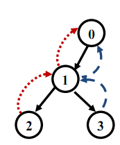

第一行包含一个整数 N。 接下来 N-1行，每行包含两个整数 x，y。表示存在一条从岛屿 x开往岛屿y的快艇专线。 N < = 100000
Waldives 有 N 个小岛。目前的交通系统中包含 N-1 条快艇专线，每条快艇
专线连接两个岛。这 N-1条快艇专线恰好形成了一棵树。
由于特殊的原因，所有N-1条快艇专线都是单向的。这导致了很多岛屿之间
不能相互到达。因此，Waldives 政府希望新建一些公交线路，使得建设完毕后，
任意两个小岛都可以互相到达。为了节约开支，政府希望建设最少的公交线路。
同时，出于规划考虑，每一条公交线路都有如下的要求：
1、每一条交通线路包含若干条连续的快艇专线，你可以认为一条公交线路
对应树上的一条路径，而其所包含的若干快艇专线则对应树上被这条路
径所覆盖的树边（也就是之前已经存在的某个快艇专线）；
2、显然一条交通线路只能覆盖树上任意一条边至多一次；
3、公交线路中所包含的每一个快艇专线都是有方向的，并且与其所覆盖的
树边的方向相反；
4、不同的公交线路可以覆盖树上相同的点或者相同的边。
Waldives 的 N 个岛屿分别从 0 到 N-1 编号。现在给出 Waldives 已有的快艇
专线信息，请计算最少所需要新建的交通线路的数量。
第一行包含一个整数 N。 接下来 N-1行，每行包含两个整数 x，y。表示存在一条从岛屿 x开往岛屿y的快艇专线。 N < = 100000
输出一行一个整数，表示需要建设的最少的交通线路数量。
4
0 1
1 2
1 3
2样例如下图所示。图中给出了一个可行的最佳方案。
其中黑色的实边代表原先已经存在的快艇专线， 而虚边则对新加入的公交线
路，分别为 2->1->0和3->1->0。
注意直接新建公交线路 3->2 是不允许的，这并不是一条树上的合法路径，
因为编号为3的点与编号为1的点在树中并不直接相连。同样的，建立公交路线
2->1->3也是不允许的，因为这条路线中包含快艇专线1->3，这并没有和已有的
专线的方向相反
